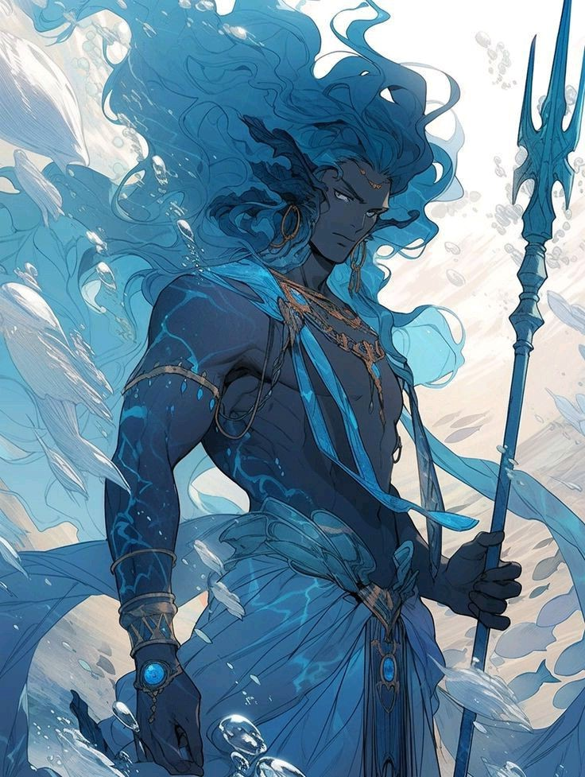

sou Poseidon, Deus
dos mares e
também
responsável pelas
tempestades e
terremotos.
Cronos engole poseidon logo após
seu nascimento, e ele permanece
preso no estômago do pai até que
Zeus, já adulto, força cronos
vomitar seus irmãos.

© Maremoto Todos os direitos reservados (2025)
Gu-3063224 / Leandro chaves
Sobre o desenvolvedor: